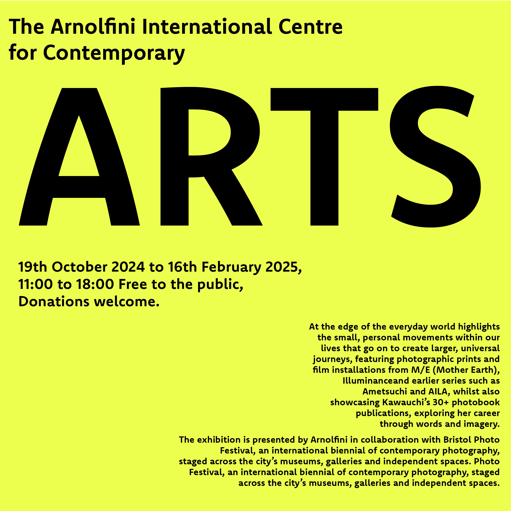

Bilateral
For this piece I had to deal with strict rules on keeping it in a straight fashion and to spice it up so I added a colored rectangular triail.
Axial

For this piece I had to present a nice diagnal line to and had to obey the rules of axial by making the text follow the same diagonal route.
Dilatation
For this piece I had to follow a circular pattern into the central point through the use of text and addded a slight color contrast to make it eye-catching.
Grid

For this piece I had to arrange certain text boxes to create a text alignment that fits the a Grid aesthetic.